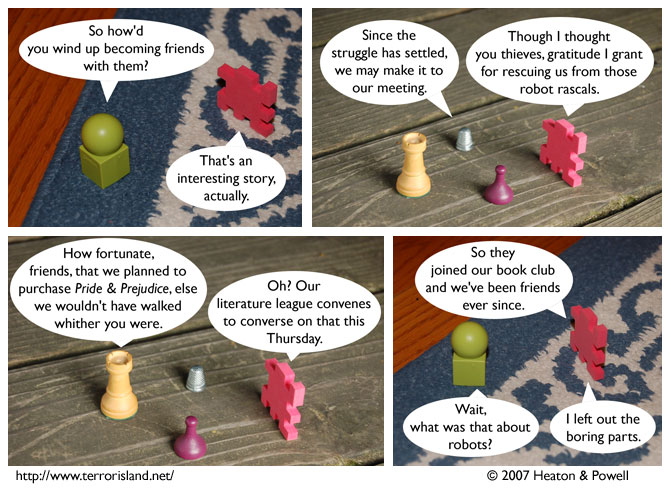

Strip #149
— Friday, May 25, 2007
You’ll never guess what Sid and Stephen originally wanted the Jane Austen book for.
Notes, Thoughts, &c.
Ben’s Notes
People in the past used too many words. I made panel 3 fairly wide, and the dialogue still barely fits in it.
It’s a good thing most of our strip takes place in the present.
Lewis’s Notes
Watch this: Props to Mike Podgorski of Green Circle, Maryanne Papke of Tile, and Kier McFarlane of Wiki’s Lessons In Life, for being members of the elite community of people who link to Terror Island.
Also, some advice: If you don’t play a musical instrument, take one up. They are way fun. I started playing the flute recently, so you should take up a different one. That way we can participate in some sort of distributed music production. Orchestra@home or something like that.